I sold my PC to a stranger on Reddit and ended up flashing a BIOS by hand
How a plan to upgrade a few parts turned into a white build, a chip programmer, a GPU from China and a brand new desk.
The plan was boring
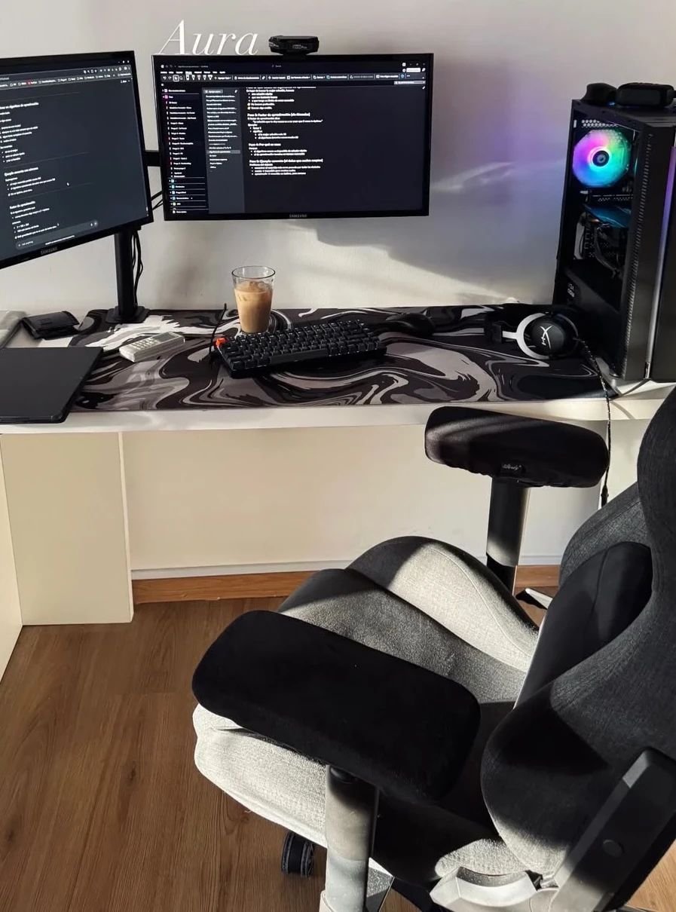
My PC was from 2019. How I got it is its own story. Six years later it still worked, but it was time.
The plan was simple and a little boring: sell the parts one by one on Mercado Libre, get some money back and upgrade slowly.
I had the listings ready when my brother told me there was an Argentine subreddit for buying and selling hardware. Why not. I posted everything and went to sleep. (I took the photos as things happened, mess included, so a few got a quick AI cleanup.)
Two critics and one buyer
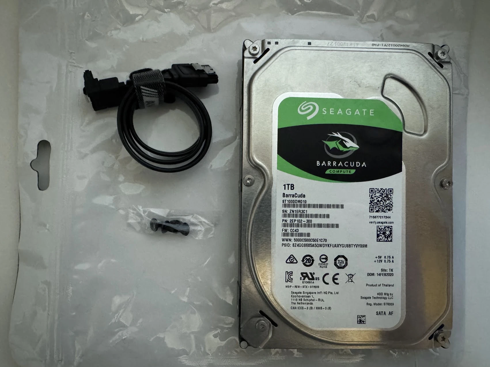
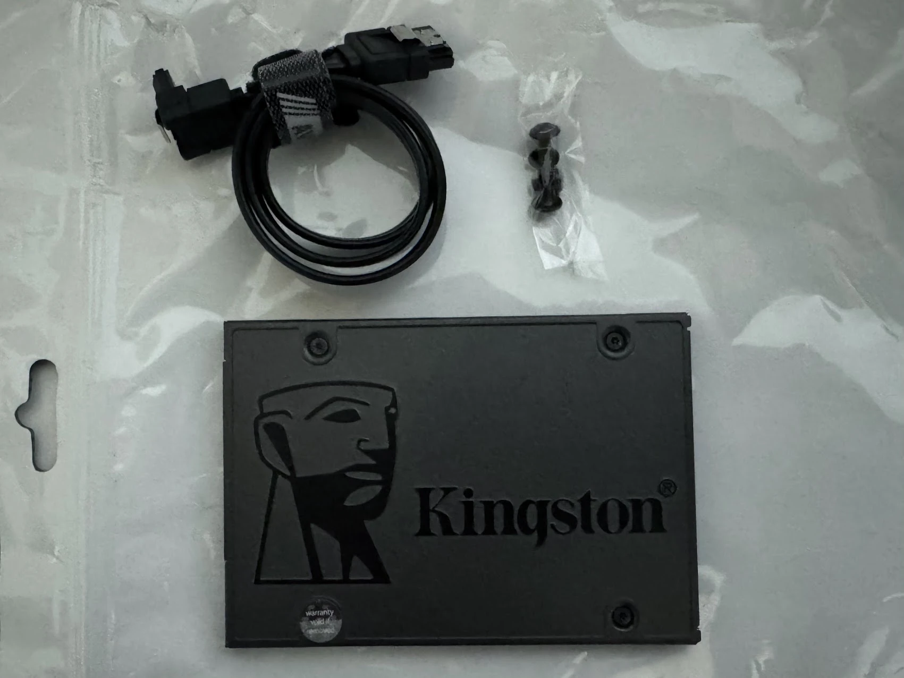
The next morning I went to the gym and checked my phone between sets.
The first two messages were reviews nobody asked for. More or less: "anyone can upgrade a PC if they add a hundred bucks", and something about how for that price I could buy better RAM. Thanks, Reddit.
The third message was an offer. One guy wanted almost everything:
- GTX 1660 Super
- Ryzen 5 2600
- 16 GB of DDR4 3200 (2 × 8 GB)
- A 600 W 80 Plus White power supply
He didn't want the case or the monitor. I kept the motherboard and the M.2 SSD, because I was going to reuse them. We negotiated a bit, agreed on a price and said I would bring everything the next day.
Then he sent me the money. All of it. Before seeing a single part, before meeting me, before anything. We were two strangers from a subreddit, and he just trusted me.
The next day I took the PC apart and brought him everything. While we were talking he reminded me of something: the old case still had a Kingston SSD and a 1 TB Seagate BarraCuda inside that I hadn't used in years. I took them out, photographed them and sold them too. Free money I didn't know I had.
That sale alone paid for almost half of the new CPU, RAM, power supply and case.
Ten days without a PC
That left me with no computer. The same day the money came in I ordered the new parts from Compra Gamer, an Argentine store with very good prices:
- CPU: AMD Ryzen 7 5700G
- RAM: 32 GB of DDR4 3200 CL16 (2 × 16 GB, ADATA XPG Spectrix D35G)
- Power supply: ASRock Steel Legend 850 W, 80 Plus Gold, full modular, white
- Case: Antec C5 Curve ARGB, white
The 5700X3D is the better gaming CPU, but the 5700G has integrated graphics, and the graphics card was still weeks away. With the G I could use the PC without a GPU. I still ended up about ten days without a computer. Without integrated graphics it would have been two weeks more.
The case was white. My first white build.
It turned on. Sort of
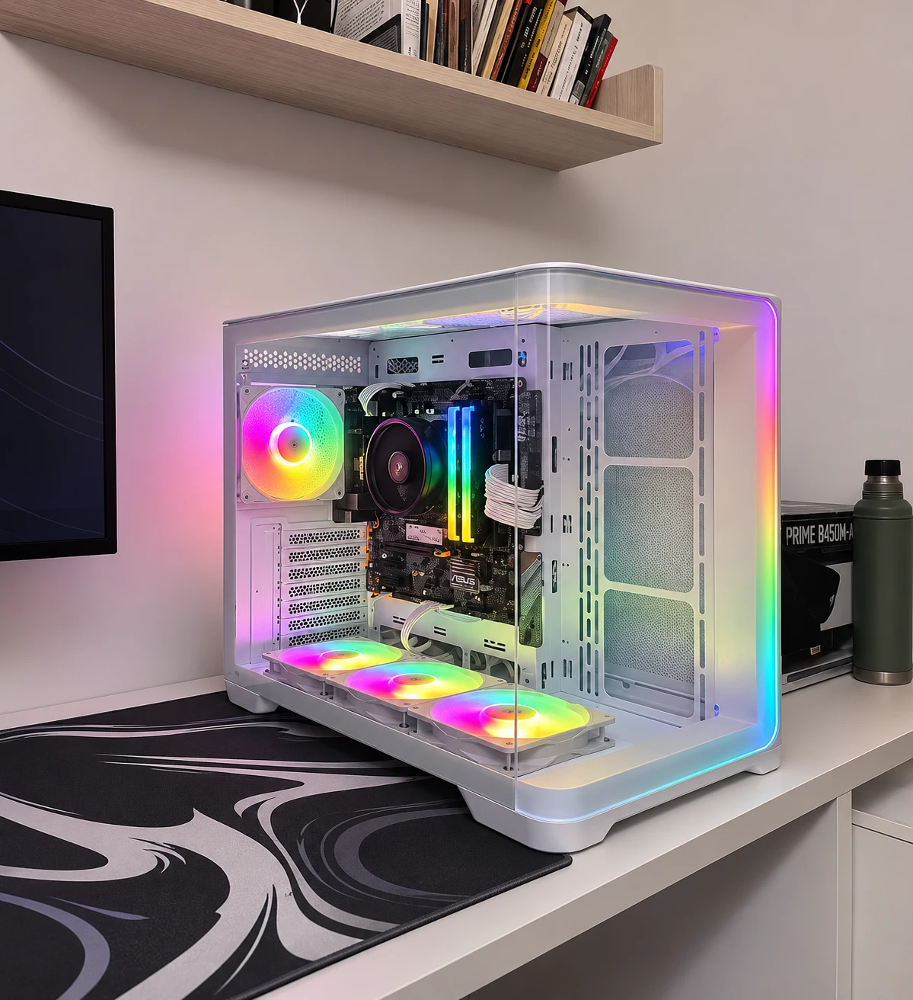
The next day I was at the office when my brother texted me: the PC had arrived. I spent the rest of the day wanting to go home.
I built it, plugged it in, pressed the button. Fans spinning, RGB everywhere, and a black screen. No image, no beep, nothing.
So I did what everyone does:
- Checked the 24 pin and the CPU power cable.
- Reseated the RAM. Then tried one stick. Then the other.
- Checked the front panel pins, which are always wrong.
- Swapped the video cable.
- Cleared the CMOS.
- Took everything out and tried with the minimum: CPU, one stick of RAM, power.
Nothing worked. And then I understood.
The chicken and the egg
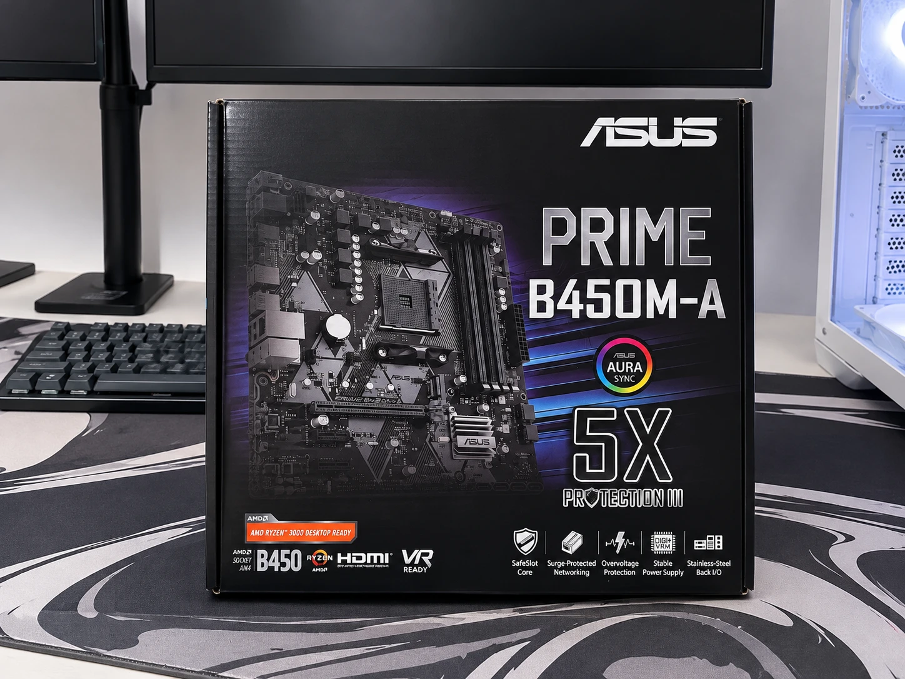
I had bought the motherboard in 2019 and never updated the BIOS. Not once. With the old Ryzen 2600 it didn't matter. The 5700G is newer, and the old BIOS didn't know it existed.
Normally you just update the BIOS. But to update the BIOS you need the PC to boot, and to boot you need a CPU the old BIOS supports. That CPU was in a stranger's house. I had sold it the day before.
The motherboard box still said "AMD Ryzen 3000 Desktop Ready". I was trying to put a 5000 in it.
I needed a new BIOS to use the new CPU, and an old CPU to install the new BIOS.
Flashing a chip by hand
After a lot of searching I found the way out: a BIOS programmer. The BIOS lives on a tiny chip on the motherboard, and a programmer can write to that chip directly, without the board ever booting.
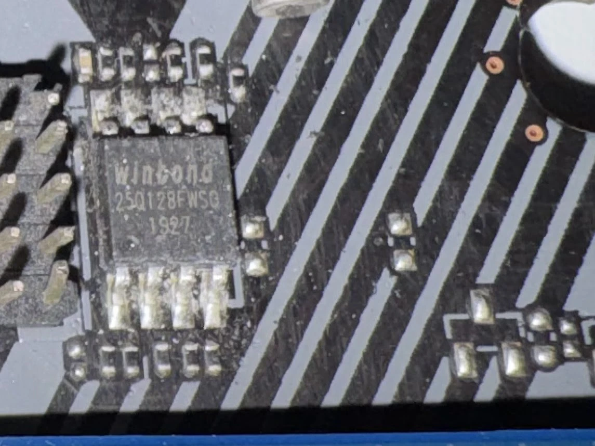
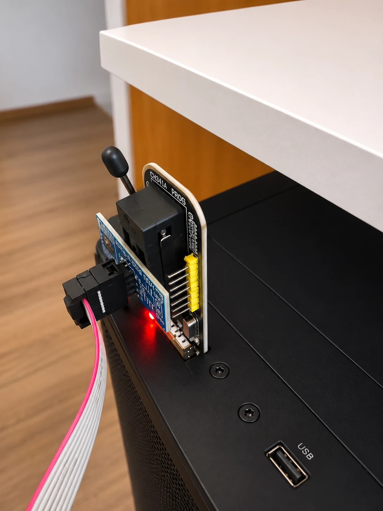
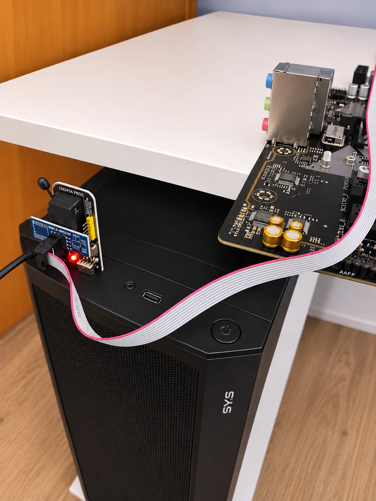
The one I bought is the classic CH341A kit: a USB programmer, a clip with a cable and a couple of small boards. It arrived the next day. My board is an ASUS PRIME B450M-A, and its BIOS chip is a Winbond W25Q128FW. That last detail will matter.
The chip even has its birthday printed on it: 1927. Year 2019, week 27. Same age as my mistake.
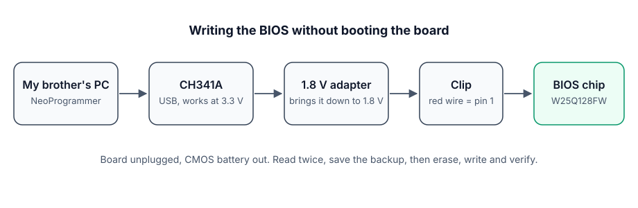
How I did it, step by step
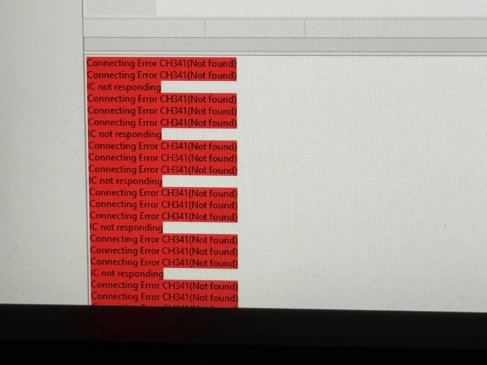
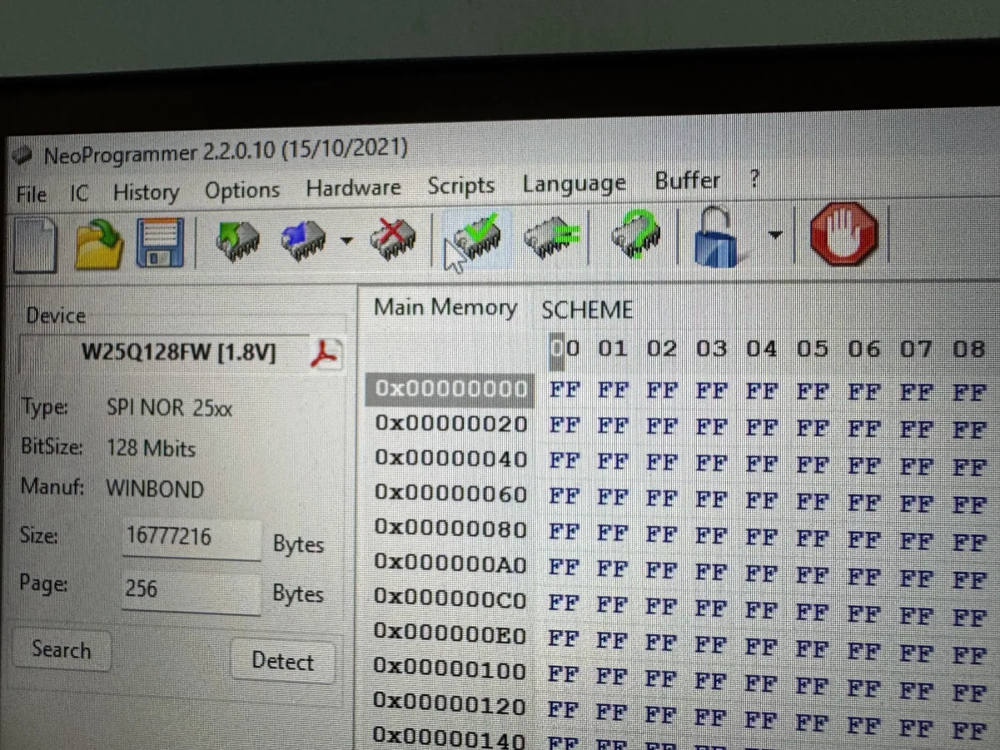
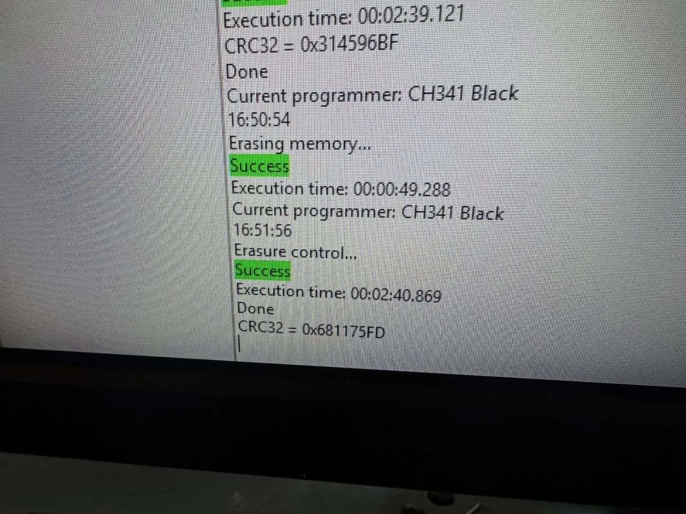
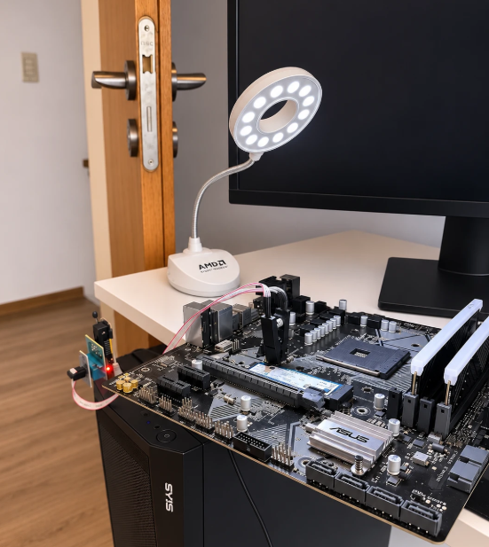
If you ever end up in the same loop, this is the whole process:
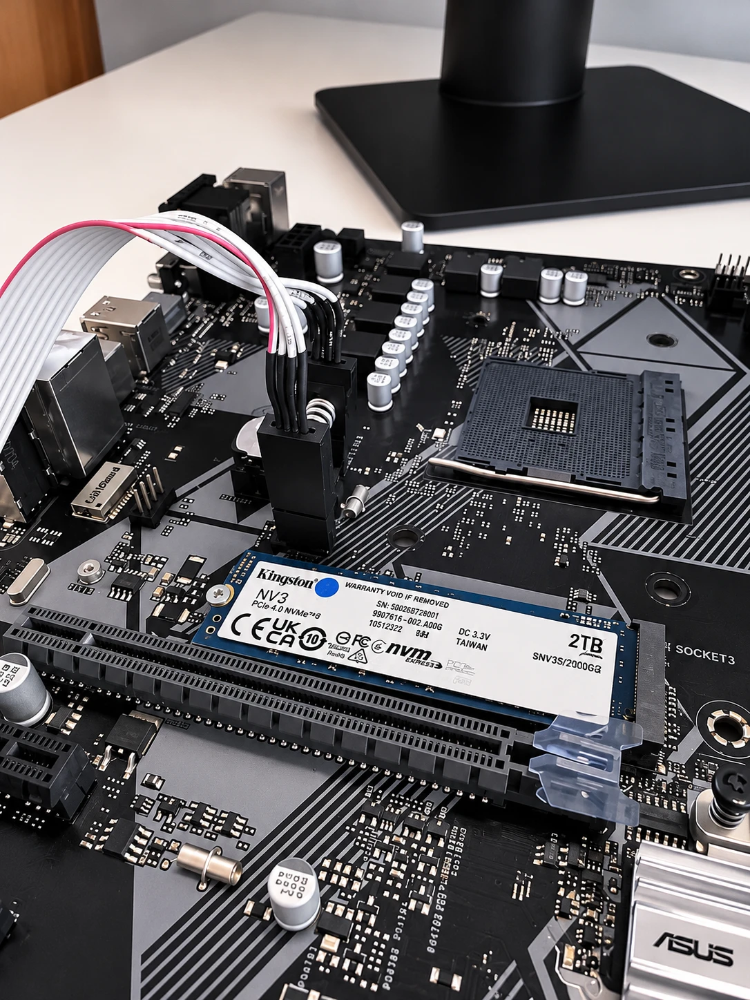
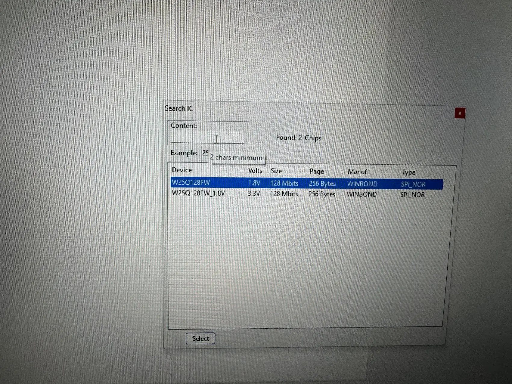
- Turn everything off. Unplug the power supply and take out the CMOS battery. The board must have no power at all.
- Install the driver. Windows needs the CH341A driver to see the programmer.
- Install NeoProgrammer. It's the free program that reads and writes the chip.
- Get the new BIOS. Download the latest version from the motherboard's support page, and check that it lists your new CPU.
- Prepare the file. ASUS ships the BIOS as a .CAP file, made to be installed from the BIOS itself, so it has extra data around the real image. I opened it with UEFITool and extracted only the body of the capsule: the 16 MB image the chip needs.
- Build the stack. The 1.8 V adapter goes on the programmer, and the clip cable goes on the adapter.
- Find pin 1. The chip has a small dot in one corner. That's pin 1, and it must match the red wire of the clip. Get this wrong and nothing will work.
- Clip it. Press the clip onto the chip until it holds firmly, then plug the programmer into another computer. Mine had no CPU it could use, so I did all of this on my brother's PC.
- Read first. In NeoProgrammer, detect the chip and read it. Careful here: when I searched for my chip, NeoProgrammer listed two W25Q128FW, and the one called "W25Q128FW_1.8V" was the 3.3 V one. The right one is the one that says 1.8V in the Volts column. Save that file: it's your backup of the old BIOS. Read it twice and check both files are the same, so you know the clip is making good contact.
- Erase, write, verify. Erase the chip, write the new image and verify it. Verify is the step that tells you it worked.
- Put it back together. Remove the clip, put the CMOS battery back, connect everything.
- Be patient. The first boot after a new BIOS takes longer than usual, because the board is testing the RAM. Don't panic and don't turn it off.
That's the clean version. The real one started with a red wall: "Connecting Error CH341 (Not found)" and "IC not responding", over and over.
The trick was noticing there were two different errors. "CH341 Not found" meant the computer didn't even see the programmer: the driver was wrong. I tried drivers until that error disappeared. "IC not responding" was the clip: the programmer was fine, but it couldn't talk to the chip. I put the clip back on, carefully, pin 1 on pin 1.
And then Claude, the AI I was asking for help, pointed out something I had missed: the W25Q128FW runs at 1.8 V, and the CH341A works at 3.3 V. Connecting them directly can damage the chip. So I needed a 1.8 V adapter, and one more trip, this time to a shop ten minutes from home.
And then, finally: "Erasing memory... Success".
So there it was: the motherboard hanging off the edge of the desk, the programmer plugged into my brother's PC, a clip on a tiny chip and a ring light from an AMD box so I could see the pins. A very rustic setup that I swear worked. I pressed the button.
It turned on.
A motherboard from 2019 running a CPU it had never heard of, without replacing anything. It was the most technical part of the whole project, and honestly the most fun.
Lesson: update the BIOS before you sell the old CPU. One click then, two days and a clip on a chip later.
One more thing in the BIOS
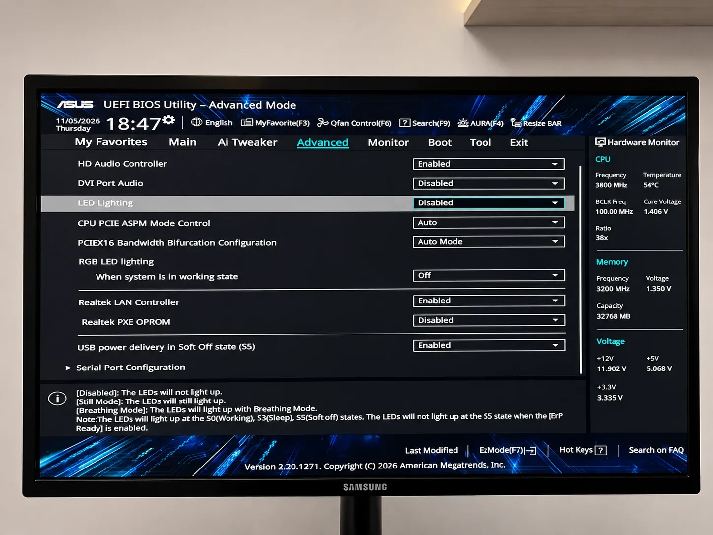
The first screen showed the memory at 2666 MHz. I paid for 3200. RAM always starts at a safe default speed, and the profile that makes it run at the speed on the box is off until you turn it on. On ASUS it's called D.O.C.P. (XMP on Intel boards). One setting, and it went to 3200.
A GPU from China, and why everything is white
Meanwhile, the graphics card. Mercado Libre now lets you buy from China, and I found a ZOTAC Gaming RTX 5070 Ti Solid OC White about 500 dollars cheaper than in local stores. You wait longer and the warranty is a question mark, but 500 dollars is 500 dollars.
The one I found was white. That's the whole reason the build is white. One good deal, and every other part had to match it.
Things I didn't need, and bought anyway
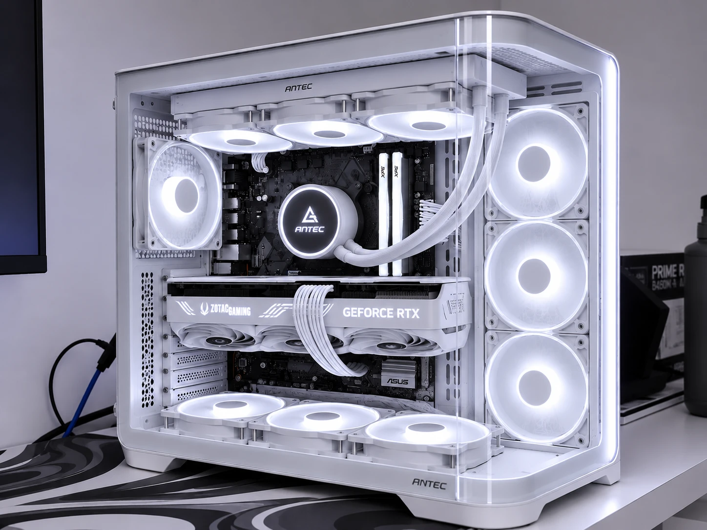
During the build I asked AI tools a lot of "what should I buy" questions. At some point I asked for images of how the case would look with matching fans and water cooling. That was a mistake. Once you see it, you can't unsee it.
Who wouldn't spend 100 dollars more to go from a stock cooler and three plain fans to this?
So I bought them:
An AIO I didn't need. An Antec Luna 360, white. Does a 5700G need water cooling? No. The CPU even came with its own cooler, the one I used for the first days. But it's the same brand as the case and the fans, and it looks amazing. I'm not going to defend this one.
Reverse fans. Three Antec Vision Connect 120 Reverse. This one was new to me. Every fan has a pretty side and an ugly side, the one with the motor support. When a fan has to push air the other way, you usually end up showing the ugly side. Reverse fans blow air in the opposite direction, so the pretty side stays visible. Zero performance difference. Big difference when you look at the case.
Where the air goes
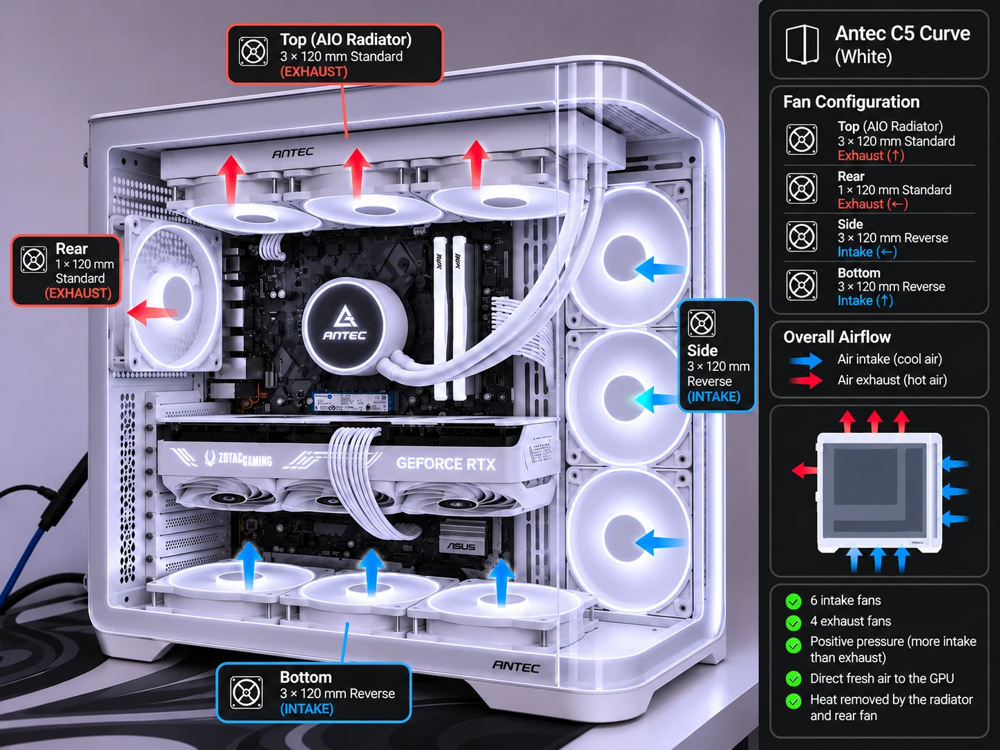
Ten fans in total: four from the case, the three I added and three on the radiator. This is where the air goes:
Six pull air in and four push it out. More air in than out means the dust has a harder time getting inside. The reverse fans are on the side, pulling air in, with their good side facing the glass.
White, not rainbow
ARGB fans come with a rainbow by default. I tried it for one evening. Then I set everything to white, and it stays white.
The reset button that doesn't reset
One more puzzle. The case has its own controller for the fans and the lights, and the front reset button can go to the motherboard or to that controller. I connected it to the controller. Now the reset button doesn't restart the PC: it changes the lights. I can't remember the last time I used a reset button, so it was an easy choice.
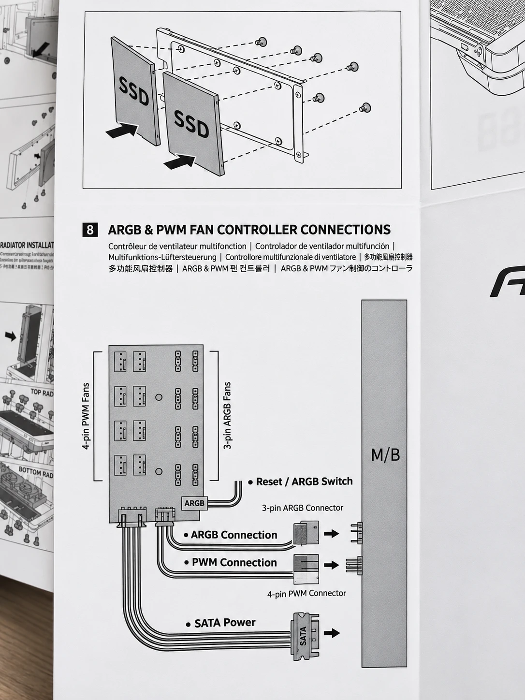
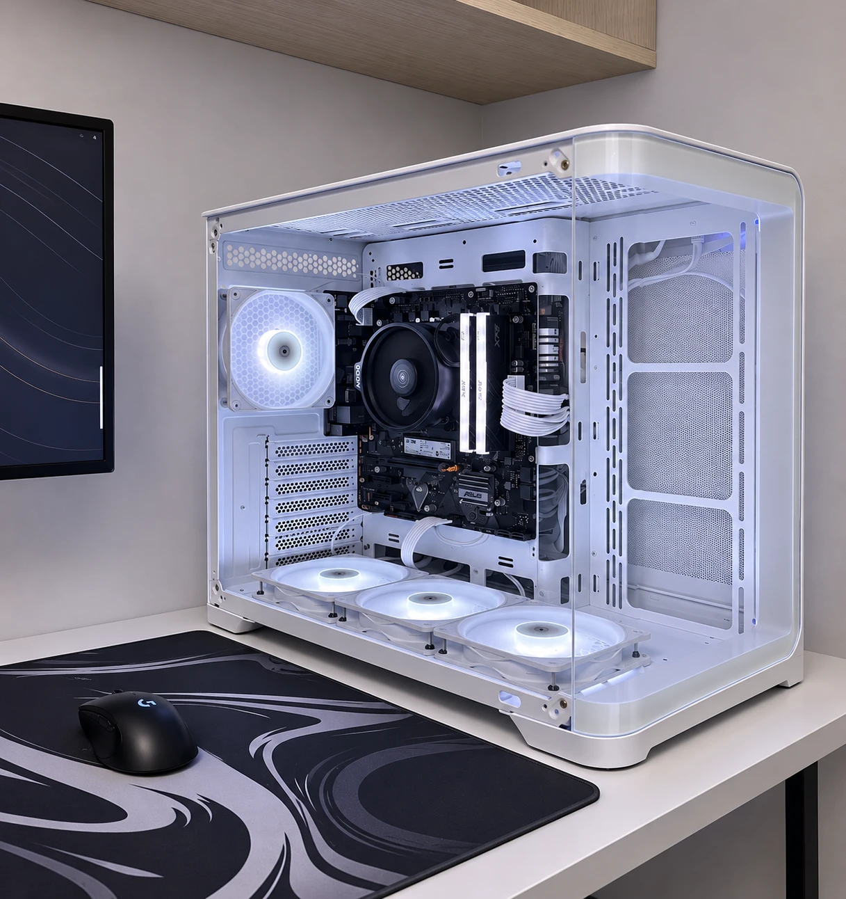
Overclocking it anyway
If you have a 360 mm radiator on a CPU that doesn't need it, you might as well use it. On Ryzen the safe way is not raising the clock by hand: it's Precision Boost Overdrive with Curve Optimizer. You lower the voltage the CPU asks for at each speed, so it runs cooler and boosts higher on its own.
The plan for this 5700G:
- PBO: enabled, with the limits on Auto. The power stage of a B450M-A is basic, so I didn't raise them.
- Curve Optimizer: -15 on all cores. Every chip is different: some hold -25 or -30, others crash at -15. Starting at -15 is the safe bet.
- Testing: CoreCycler instead of Cinebench. Curve Optimizer errors usually show up at low load or idle, and Cinebench doesn't catch them. CoreCycler tests one core at a time.
- Next step: if it passes a few hours of CoreCycler without errors, go to -20. If one core fails, go back to -15 only on that core, with the Per Core mode.
Most 5700G chips end up somewhere between -15 and -25. I'll update this when I know where mine lands.
Was the AIO necessary? Still no. But now at least it has a job.
Things I did need
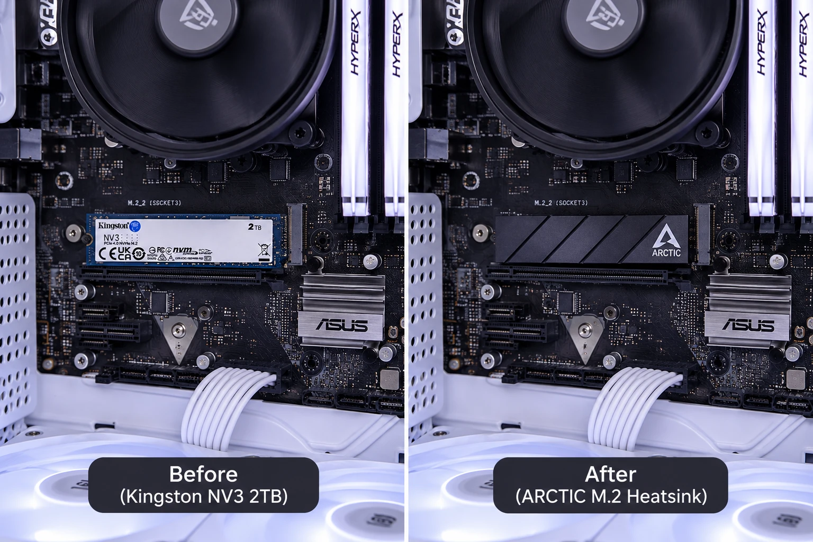
A modular power supply. You only plug in the cables you need, so there's no pile of extra cables hidden behind the case. Mine is white, and so are the cables.
A cheap M.2 heatsink. Motherboards that come with an M.2 heatsink usually cost more. I bought an Arctic M2 Pro for about 10,000 pesos (around 6 dollars) and installed it in two minutes. I bought two, actually: the second one was for my brother. Check your SSD temperatures first, though. Not every drive needs one.
Wi-Fi and Bluetooth adapters. Boards with Wi-Fi cost more. I bought two small TP-Link adapters instead. And I always play on cable anyway: it's more stable than any Wi-Fi.
The hidden cost: cables and adapters
Nobody puts this in the budget, and everybody pays it.
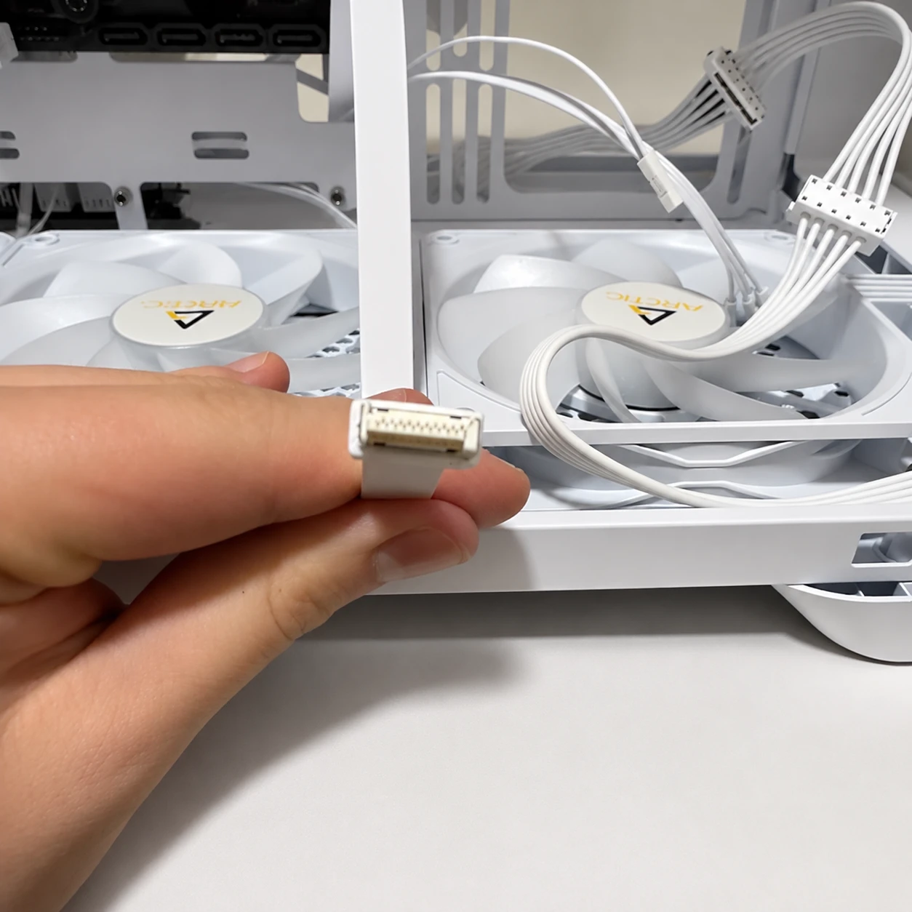
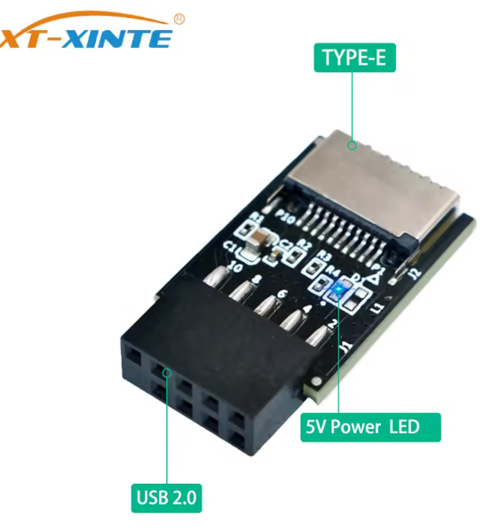
- Four DisplayPort 1.4 cables. Two computers and two monitors through a KVM means four cables, not two.
- A USB-C header adapter from AliExpress. The front USB-C port of the case uses a small connector called Type-E, and a B450 board from 2019 doesn't have one. The USB 3.0 header was already taken by the other front ports. The adapter turns a 9 pin USB 2.0 header into a Type-E, so the port works. Slower, but it works.
- A USB hub from Vention, because a desk with a KVM eats USB ports.
- The 1.8 V adapter for the BIOS programmer.
None of them is expensive. Together, they're a small part you didn't plan for.
The desk got an upgrade too
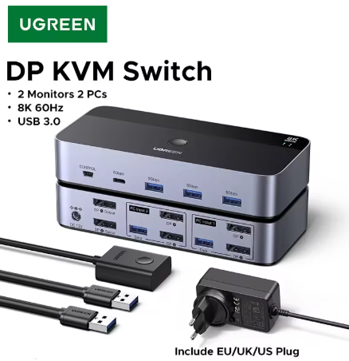
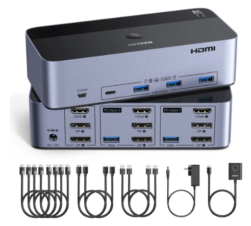
I bought two ASUS TUF Gaming VG27AQL5A: 27", 1440p, IPS, 210 Hz. The third one is a 24" HDMI monitor at 60 Hz that a previous job gave me and never asked me to return.
That one is vertical. If you write code, read documentation or follow logs, a vertical screen fits twice as many lines, and the two main screens stay free.
Hydraulic arms. The rigid ones always end up in the wrong position. With gas arms you move the screen with one hand. I bought a Smart Tech double arm for the two 27" and a single one for the vertical monitor, because a triple arm cost more than both together.
DisplayPort. A 210 Hz monitor doesn't give you 210 Hz if the cable can't carry it. DisplayPort has more bandwidth than HDMI, so the two main monitors use it.
The keyboard. A Logitech MX Mechanical Mini. 75% is the perfect size: no number pad, but the arrows and the function keys stay. It's mechanical, low profile, wireless on a 2.4 GHz receiver, the backlight is only white, and it has a Ñ, which in Argentina is not a detail.
The mouse. A Logitech G305. Wireless and light.
A KVM. I have two computers: mine and the work laptop. A UGREEN KVM shares the three monitors, the keyboard and the mouse between both, and one button switches from one to the other. No cables to change, ever.
I actually bought two. The first one was a UGREEN 8K DP KVM for two monitors, from AliExpress. My brother saw it and wanted the same setup, but with two monitors: he doesn't like three. So that one is his, and I bought the three-monitor version for me.
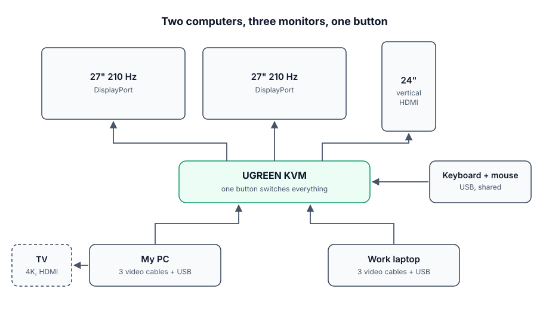
The TV. The PC is also connected to the living room TV, a 55" TCL 55P735 with a game mode. When I want to play from the couch, I play there in 4K at 60 FPS.
Sound and light
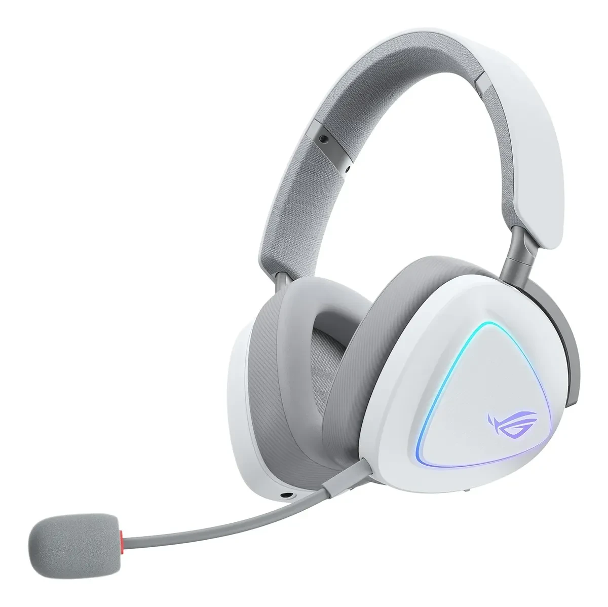
I had a black Blue Snowball with a boom arm and a pop filter, and a pair of Logitech Zone Vibe 100 for the office. Fine headphones. Boring headphones.
Then I bought new headphones, and the mic was so good that the Snowball didn't make sense anymore. I sold the Snowball, the arm, the filter and the Vibe 100.
Choosing them took a while. These were the candidates, all in the same store:
- SteelSeries Arctis Nova 7 Gen 2. Very good and white, but the mic retracts into the cup instead of coming off, and the battery is 50 hours.
- Logitech Astro A50X. It has a base station with HDMI, which is great if you also have a console. Almost twice the price, and 24 hours of battery.
- SteelSeries Arctis Nova Pro. Hi-Res audio and a GameDAC, but black and wired to that DAC.
- SteelSeries Arctis Nova 3P. White and cheaper, but a step below in audio.
- ASUS ROG Delta II Wireless. The winner.
Why the Delta II: the mic comes off when I'm not using it, they're light, the leatherette doesn't peel, the audio is very good, the mic sounds almost like a studio mic, and the battery lasts up to 110 hours. And they're white.
One more thing about the Delta II: the headband padding is known to wear out. Before it happened, I bought a cover for it on AliExpress, made for this exact model: breathable mesh with a zipper, in light grey to match. It cost about 7 dollars.
If I ever buy a microphone again, it'll be a Fifine with a low profile arm, so it doesn't block the webcam.
The webcam is an old Logitech that still works fine. What I did buy was light: a Logitech Litra Glow. Good light does more for your image than an expensive camera.
I think this matters more than people admit. At work we used to talk about two skills: knowing your stuff and knowing how to communicate it. Remote work added a third one: production quality. You can know everything and explain it well, but if nobody can hear you clearly or see your face in a meeting, part of the message gets lost.
The tool I didn't know I needed
To clean the PC I used to need an air compressor. Now I have a mini turbo blower, a small electric one, and it's perfect for dust in fans and filters. Tip: hold the fans while you clean them, so they don't spin too fast.
Perfect timing
All of this happened right when I was changing jobs, so now I work on a company laptop and the KVM finally earned its place.
The full list
Inside the PC
| Part | Model | Where |
|---|---|---|
| CPU | AMD Ryzen 7 5700G | Compra Gamer |
| GPU | ZOTAC Gaming RTX 5070 Ti Solid OC White | Mercado Libre, from China |
| RAM | 2 × 16 GB DDR4 3200 CL16, ADATA XPG Spectrix D35G | Compra Gamer |
| Motherboard | ASUS PRIME B450M-A | Reused, with a new BIOS |
| Storage | Kingston NV3 2 TB, M.2 NVMe | Reused |
| M.2 heatsink | Arctic M2 Pro | Mercado Libre |
| Power supply | ASRock Steel Legend 850 W Gold, white | Compra Gamer |
| Case | Antec C5 Curve ARGB, white | Compra Gamer |
| CPU cooler | Antec Luna 360 ARGB, white | Compra Gamer |
| Fans | 3 × Antec Vision Connect 120 Reverse | Compra Gamer |
On the desk
| Part | Model | Where |
|---|---|---|
| Monitors | 2 × ASUS TUF Gaming VG27AQL5A | Mercado Libre |
| Third monitor | 24", 60 Hz | A previous job |
| Arms | Smart Tech double hydraulic arm + one single arm | Mercado Libre |
| KVM | UGREEN DP KVM, three monitors | |
| Keyboard | Logitech MX Mechanical Mini | |
| Mouse | Logitech G305 | |
| Headphones | ASUS ROG Delta II Wireless, white | Compra Gamer |
| Light | Logitech Litra Glow | |
| BIOS programmer | CH341A kit + 1.8 V adapter | Mercado Libre + local shop |
What I'd tell you before you start
- Update the BIOS before you sell the old CPU.
- If your GPU is late, a CPU with integrated graphics keeps you working.
- Turn on D.O.C.P. or XMP, or your RAM runs slower than what you paid for.
- Check what you're paying for on a motherboard. Wi-Fi, Bluetooth and an M.2 heatsink are cheaper as separate parts.
- Budget for cables and adapters.
- Buy a modular power supply if you care about cables.
- Use DisplayPort for high refresh monitors.
- Light first, camera second.
- Sometimes strangers on the internet are kind.
What's next
It's for work and for gaming. The Witcher 3 again, Red Dead Redemption 2, which I never finished, and The Witcher 4 when it finally comes out.
And probably another upgrade one day. Apparently a PC is never finished.